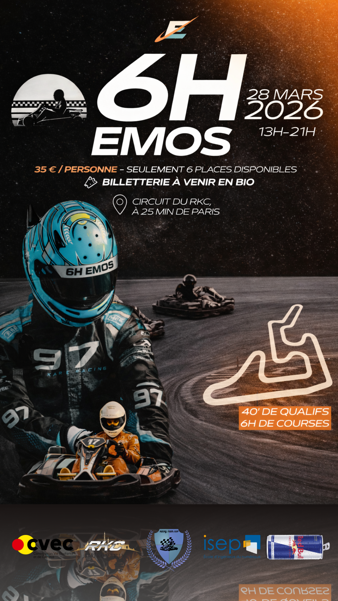

Activités

6H EMOS
La Racing Team ISEP participera aux 6H EMOS, une course d’endurance inter-universitaire organisée par ESTACA Motorsport au circuit RKC Karting.
Chaque école dispose d’un châssis. La Racing Team ISEP représentera l’ISEP avec un châssis composé de 6 pilotes.
28 mars 2026
13h – 21h
Circuit RKC Karting
La course comprend 40 minutes de qualifications suivies de 6 heures de course d’endurance.
La course sera également rediffusée sur Twitch.
L’équipe gagnante se verra rembourser son châssis et de nombreux lots sont à gagner.
Seulement 6 places disponibles.
Tarif : 35 € par personne.
Les Isépiens sont également invités à venir soutenir les pilotes le jour de la course.
Par ailleurs, notre partenaire Red Bull sera présent à l’événement (distribution de canettes).
Billetterie bientôt disponible sur l’Instagram de la RTI : @racingteamisep

Red Bull Basement
xxx